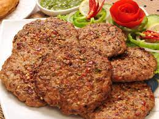

Mutton Kabab

About Mutton Kabab
Mutton Seekh Kabab is ground or minced mutton (goat or lamb meat) that's mixed & flavored with few aromatic spices & herbs, skewered and cooked on a Tawa or griddle with minimum oil until just done.
Go Back